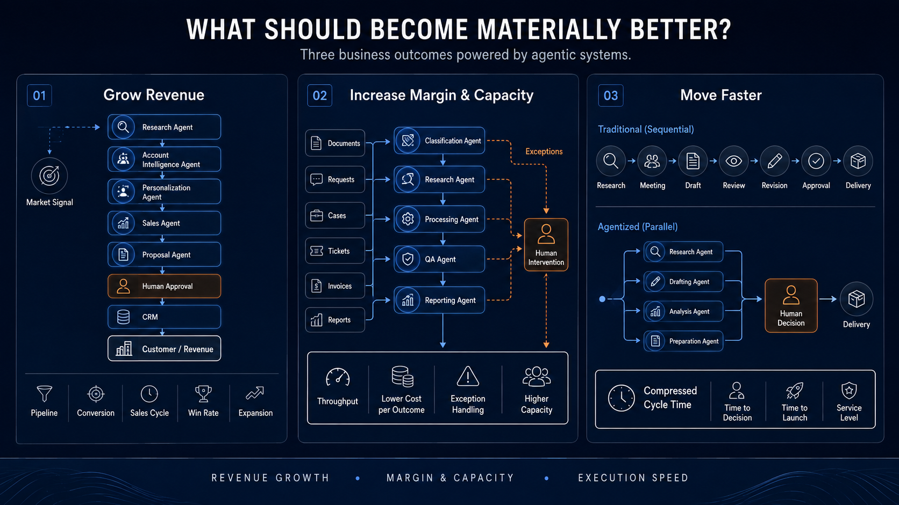
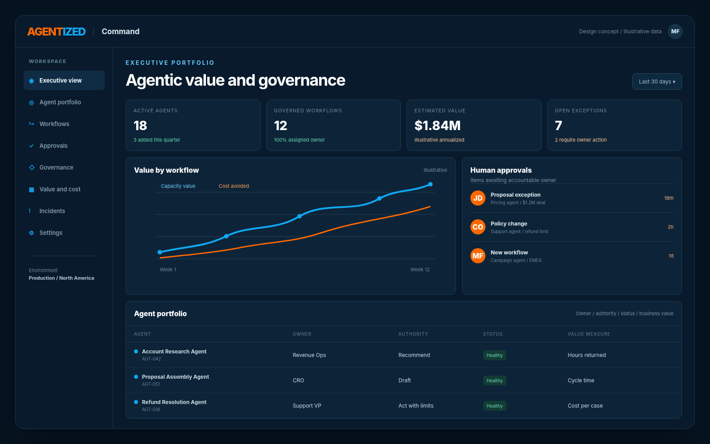
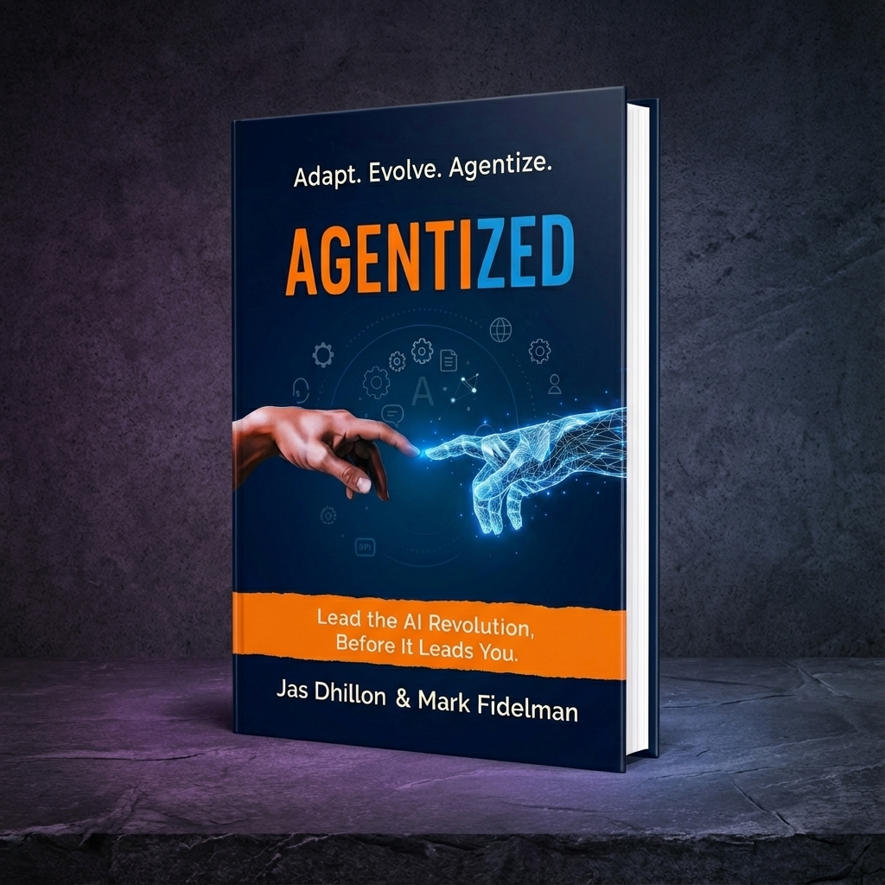

Agentized helps mid-market companies redesign high-value revenue and operating workflows around governed AI agents. We identify where value exists, build and integrate the systems, and measure the effect on revenue, margin, capacity and execution speed.
Illustrative workflow, not client data
Built for leadership teams that need measurable operating results, not another AI demonstration.
Employees are experimenting. Departments are buying disconnected applications. Pilots are multiplying. But the economics of the business have not materially changed because the workflows, decision rights, systems, incentives and accountability surrounding the technology remain the same.
Agentized turns scattered experimentation into governed business systems.
Adding AI to a broken workflow only makes the broken workflow move faster.
The real opportunity is to redesign the process from end to end around what humans should lead, what agents should execute and where the two should work together.
Most companies have AI tools. Few have an operating model.
Deploy agents across account research, lead qualification, personalization, proposals, pipeline intelligence, marketing execution, customer expansion and retention.
Redesign customer support, finance, reporting, document processing, internal knowledge, procurement, quality assurance and repetitive service-delivery work.
Compress customer onboarding, research, analysis, product development, campaign production, executive reporting, approvals and project delivery.

We identify workflows where agentic systems can create a step-change in speed, capacity, personalization or marginal cost. Then we establish the baseline, redesign the work, deploy the system and verify the result.
The Agentized Enterprise System is those six layers. Skip one, and the agent works in a demo but fails in production.
Map the value chain, systems, data, bottlenecks and economics.
Rebuild the priority workflow around human judgment, agent execution and explicit decision rights.
Build, configure, integrate, evaluate and launch agents in a controlled production environment.
Measure the result against the baseline, including operating and technology costs.
Expand what works and establish the governance and operating model required for continued adoption.
A four- to six-week executive engagement that identifies, quantifies and prioritizes the highest-value opportunities.
Redesign and deploy one to three priority workflows with defined business, quality and governance targets.
Scale successful agentic systems across functions, teams and business units.
Continuously monitor, govern, improve and expand the agent portfolio.
Engagements begin with a paid assessment.
As companies deploy more agents across more systems, leaders lose track of what those agents are doing, what they cost, who is accountable, and whether they are producing business value.
Agentized Command is our answer to that problem: a single value, governance and management layer for every agent in the Agentized Enterprise. It is being built now, through selected client engagements and design partnerships.
Initial areas of focus include agent and workflow inventory, human approval points, policy and permission management, performance and exception monitoring, cost and ROI reporting, audit history, model and vendor visibility and executive portfolio reporting.

Every Agentized deployment defines what the agent is allowed to do, which data it can access, which decisions require human approval, who owns the outcome, how quality is tested, how activity is recorded, how incidents are handled and how the system is changed or retired.
Every Agentized engagement begins with a baseline and ends with an evidence review. We measure revenue, margin, capacity, speed, quality and adoption, then compare what we projected against what actually happened.
A projection is not a result. It becomes one only when it shows up in your operating numbers and your financials.
View the Results
AGENTIZED explains why AI agents change the economics and structure of work, how leaders can respond, and what it takes to build an organization where humans and agents operate as one coordinated system.
Agentized, the consulting business, applies those principles to a specific company: your workflows, your systems, and results you can measure.
Jas Dhillon and Mark Fidelman speak to corporate leaders, boards, technology conferences, industry associations, universities and executive-education programs about the strategic, operational and human consequences of agentic AI.
Programs can include keynotes, board briefings, executive workshops, leadership off-sites, corporate book programs and agentic opportunity sessions.
An Agentic Value Assessment identifies where agentic AI can produce the strongest economic result, evaluates feasibility and risk and produces a governed roadmap to production.
Paid assessments are designed for qualified mid-market and enterprise organizations.